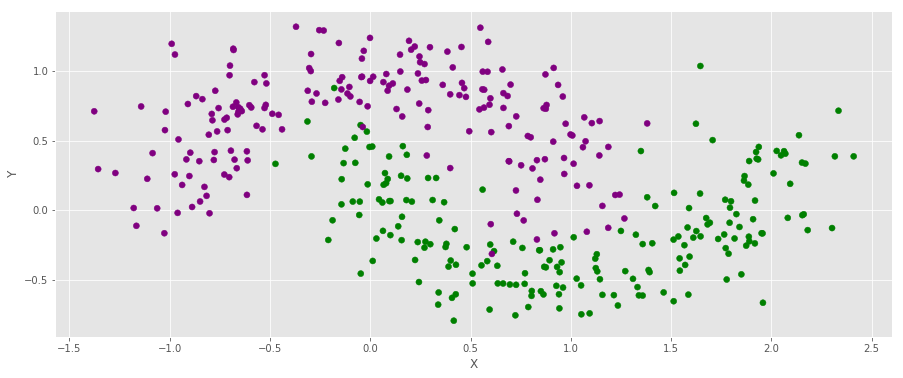
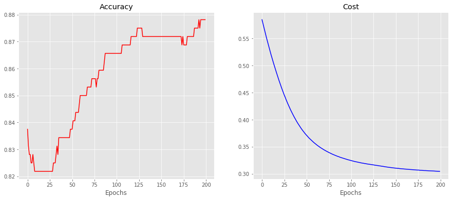

Training an Artificial Neural Network using a genetic algorithm
2020-07-10
1 Introduction
In the literature of Artificial Neural Networks (ANNs), the most common form of training involves the using Gradient Descent (GD) using the Backpropagation Algorithm (BP), which is nothing but the algorithmic design of gradient computations in a neat form (which shoud not be overlooked, for it was a huge step forwards in the field of Machine Learning).
It turns out that BP relies on computations of derivatives. The natural question is then: can we train an ANN without gradient information?
Yes, we can: we just need to figure out how to explore the parameters' search space. I coded an example (available here in which we perform training of an ANN using a very simple (somewhat primitive) random search. In fact, if one thinks about GD methods, or any other optimization methods, they are nothing but ways to explore the parameter space.
What I will do in the sequel is mainly based inspired by Daniel Hillis seminal paper Co-evolving parasites improve simulated evolution as an optimization procedure, that I really liked (and strongly recommend). The technique has many names, and is commonly known as Genetic Algorithms. There are many books available, and if you are interested you can start by looking here at this MIT OCW course - Multidisciplinary System Design Optimization.
To begin with, let's generate some data, construct a classical ANN (using Keras).
Remark: take a look at http://playground.tensorflow.org/, which is a very interesting site to see how decision boundaries behave as training evolves through time.
1.1 The classical approach using ANNs
To begin with, let's consider a problem, a simple one, not too complicate. Let's get the libraries we shall need.
#for numerical computations
import numpy as np
#for plotting
import matplotlib.pyplot as plt
plt.style.use('ggplot') # check plt.style.available
#for training classical ANN; we shall also borrow some activation functions from them
import tensorflow as tf
#to generate the dataset
from sklearn.datasets import make_moons
# for train-test splitting
from sklearn.model_selection import train_test_split
## extra
from copy import deepcopyFirst we get the dataset
X, Y = make_moons(noise = .2, n_samples = 400)
color = np.asarray(['purple', 'green'])f, ax = plt.subplots(figsize = (15,6))
ax.scatter(X[:,0], X[:,1], c = color[Y])
ax.set_xlabel("X")
ax.set_ylabel("Y")
ax.grid(True)
X_train, X_test, Y_train, Y_test = train_test_split(X, Y, test_size = .2)
Y_train, Y_test = np.reshape(Y_train, (-1, 1)), np.reshape(Y_test, (-1, 1))Recall that keras considers the data as batch_size X features
import keras
from keras.models import Sequential
from keras.layers import Dense
keras.backend.clear_session()
# Neural network
model = Sequential()
model.add(Dense(4, input_dim=2, activation='relu'))
model.add(Dense(1, activation='sigmoid'))model.compile(loss = 'binary_crossentropy', optimizer = 'adam', metrics = ['accuracy'])history = deepcopy(model.fit(X_train, Y_train, epochs = 200, batch_size = None, verbose = False))# fit the keras model on the dataset
_, accuracy_test = model.evaluate(X_test, Y_test)
_, accuracy_train = model.evaluate(X_train, Y_train)80/80 [==============================] - 0s 319us/step
320/320 [==============================] - 0s 32us/stepprint(
"\n The accuracty for the testing set is "+str(np.round(accuracy_test, 4))+\
"\n The accuracty for the training set is "+str(np.round(accuracy_train, 4))
) The accuracty for the testing set is 0.9125
The accuracty for the training set is 0.8781#model.evaluate(X,Y)
f, ax = plt.subplots(ncols = 2, figsize = (15,6))
ax[0].set_title("Accuracy")
ax[0].set_xlabel('Epochs')
ax[0].plot(history.history['accuracy'], c = 'r')
ax[1].set_title("Cost")
ax[1].set_xlabel('Epochs')
ax[1].plot(history.history['loss'], c = 'b')
1.2 Genetic Algorithms
Genetic Algorithms (GA) are somehow inspired by biological plenomena. I will not dwell on the topic that much, just referring briefly to the properties you should know of:
Genome: it is a sequence of nucleotidis, which as smaller units they are made of. You can imagine it as a vector, where each entry of the vector is a nucleotidis. In general the number of nucleotides is finite, but here we shall allow them to assume any value in the real line.
Mutation: it consists of a random change that may happen to any entry in a genome.
Crossover: it is basically a process in which a pair of genomes exchange nucleotides. In our case we will do it by defining a cutting point. For instance: given two sequences, \[X_1 \quad \text{and}\quad X_2,\] if the cutting point is "c" (we shall use python's slicing convention), these two sequences will recombine into two new sequences, \[ \label{combination} \widetilde{X}_{j(mod2)} := X_{j(mod2)}[0:c]\oplus X_{(j+1)(mod2)}[c:],\quad \text{for} \quad j\in\{0,1\}. \tag{1} \]For example. when \(c=2\), $ X_1= (1,9,8,7)$, and \(X_2 = (2,0,2,0)\) we get \(\widetilde{X_2} = (1,9,2,0)\) and \(\widetilde{X}_2 = (2,0,8,7)\). Needless to say that these two sequences should always have the same length.
There are other types of crossover, and I'll stick with the one explained above. You can read more about Biology at the Encyclopedia Britannica website.
As you might have noticed, since mutation and crossover are stochastic, we shall need to define two associated quantities, respectively \(p_m\) and \(p_c\), to account for them.
1.2.1 How does it work?
First, we shall need an "interface" between weights of an ANN, and genomes: we shall be able to map one to the other in a 1-1 way. This part is easy, and will be tackled soon.
There are other things more important to worry about.
Genomes?
This part is somewhat nontrivial, involving a bit of modeling and, mostly, critical thinking: where are the genomes in an ANN? The first thing to do is to think what we are looking at: when we optimize an ANN we are after some "good" weights, based on which the model has good accuracy, or scores well in a certain metric. In our case then, we shall look at weights as if they were genomes. In order to do that we shall first "flatten" all the layers together, as if they were a long genome.
Fitness
Next, we think about how to measure the fitness of a genome: what makes a sequence better than other? This part is not much far from the classical ANN model, and we shall consider the weights that give a high accuracy of prediction. In a serious project or paper, you should split the dataset into 3 parts, train-dev-test set, but here we shall only use a train-test, and do model assessment by measuring the error on the training set, and testing it on the test set.
We are looking for some quantity that indicates how well the indiviual "survives" in a certain environment: that is, given an ANN with a certain genome, if it classifies well, all is good and we would like more of that genome in our future propulations (which means, this individual should leave descendants), but if it does not classify well, this ANN will probably not succeed, and shall not leave descendants.
We shall then measure fitness as a function inversely proportional to the cost function (which in the classical ANN setting must be minimized): the higher (resp. lower) the cost, the less (resp. more) prone to leave decendants the individual is.
1.3 Adding a little bit of mathematics to the discussion
Mathematically, we we will do the following: assuming a population (a set of ANNs' weights) \(\mathscr{W}= \left( W_j\right)_{1\leq j \leq N}\), assume a cost function \(\mathscr{W}\ni W \mapsto \mathrm{Cost}_{\mathscr{W}}(W)\). Now we associate a probability measure to each individual in this population,
\[ \begin{align}\label{part_fnt} P(W_j) = \frac{ e^{- \beta \mathrm{Cost}_{\mathscr{W}}(W_j)}}{\sum_{m = 1}^N e^{-\beta \mathrm{Cost}_{\mathscr{W}}(W_m)}},\tag{2} \end{align} \]
which plays the role of a canonical partition function, as in Statistical Mechanics. The quantity \(\beta\) is a quantity that we give, and is inversely proportional to the temperature in the system; I'll talk more about that towards the end. When \(\beta =1\) this function becomes the well known https://en.wikipedia.org/wiki/Softmax_function.
We shall use \(\eqref{part_fnt}\) as follows: given a population of \(N\) individuals, with weights \(\mathscr{W}= \left( W_j\right)_{1\leq j \leq N}\), at each step we shall generate a new population with \(N\) individuals by selecting from \(\mathscr{W}\) with probabilities given by \(\eqref{part_fnt}\). Notice that the individual that minimizes the cost function is the one that has the highest probability of being chosen.
Last, we shall talk about mutations. We shall consider mutations at each entry of the weight matrices, as a Bernoulli with probability \(p_c\) (for now kept constant, but which can mutate at each iteration). If an entry is chosen to mutate, it will do so as a random noise, distributed as a normal variable centered at the origin, with variance 1.
In what follows, I'll assume N even: if it is odd you can "throw away a descendant" at the end of this process.
Ok, now we are ready to start. We shall define a few things:
- Initialize N (random) ANNs randomly, yieding a sequence of ANNs' weights \(\mathscr{W} = \left(W_j\right)_{1\leq j \leq N}\);
- Forward propagate each model, generating the fitness P(W_j) of each weight;
- Map each element in $ $ to a space \(\mathscr{G}\) of genomes. We shall represent this 1:1 correspondence as \(\left(W_j\right)_{1\leq j \leq N} \to \left(G_j\right)_{1\leq j \leq N}\);
- Select a new generation with N individuals from \(\mathscr{G}\), selected with replacement according to \(\eqref{part_fnt}\). Abusing notation, we shall still represent this generation as \(\left(G_j\right)_{1\leq j \leq N}\);
- For every 1 j N/2, pair individuals \(G_{2j}\) and $ G_{2j+1}$ and crossover with probability \(p_c\) at a random point along it's length. This new sequence is still denoted by \(\left(G_j\right)_{1\leq j \leq N}\);
- Now, with a sequence \(\left(G_j\right)_{1\leq j \leq N}\) in hands, decide whether to mutate each entry by sampling a Bernoulli with parameter \(p_c\): if you get a success (with probability \(p_c\)), you mutate the entry by adding noise to it - a realization of a normal distribution with variance 1; if you do not mutate, nothing is done and the entry remains the same.
- Rewrite the genomes as weights: \(\left(G_j\right)_{1\leq j \leq N}\to \left(W_j\right)_{1\leq j \leq N}\);
- Stop, or return to step 3;
Each time we follow this "recipe" we obtain a new generation (we shall use 150 generations).